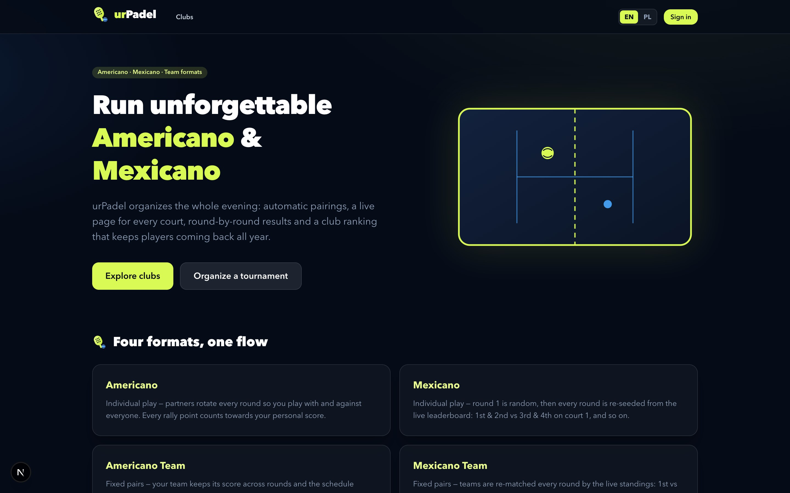
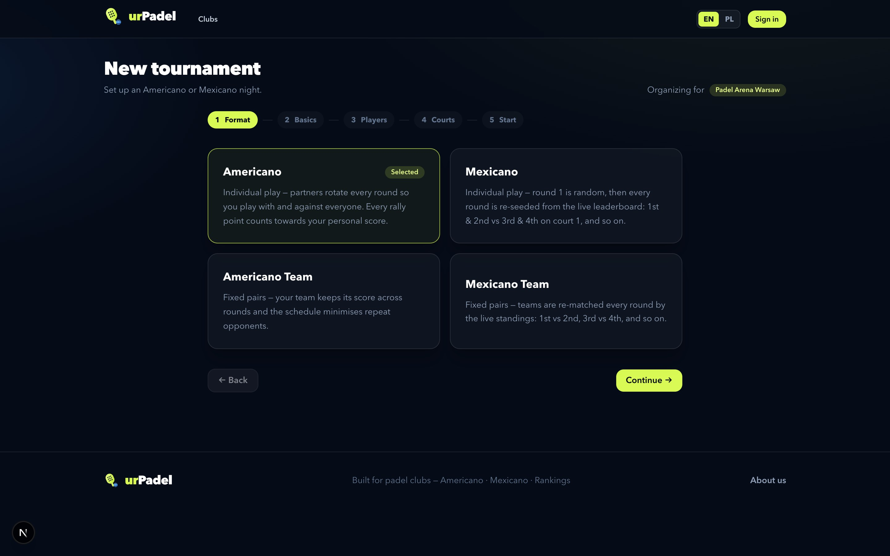
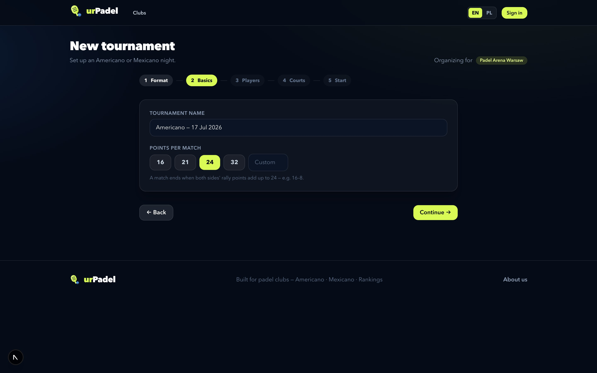
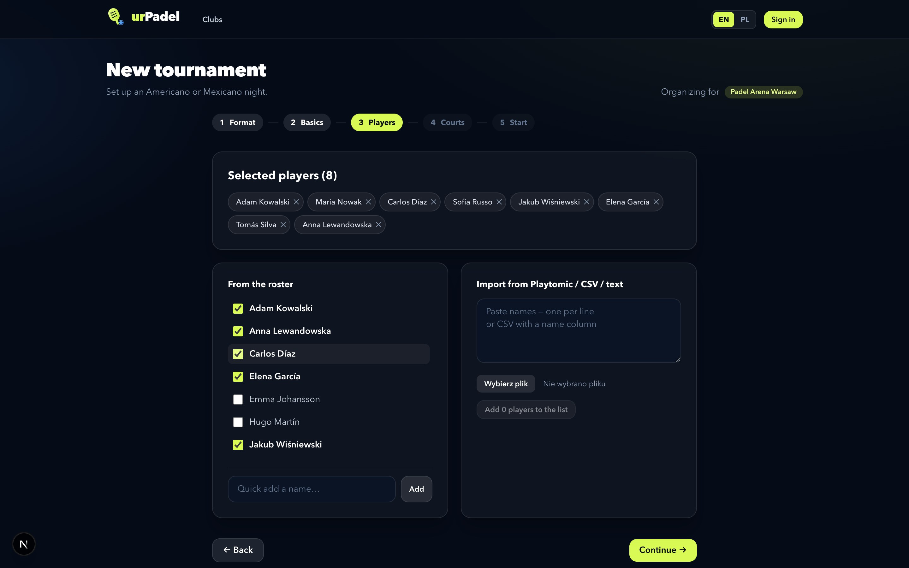
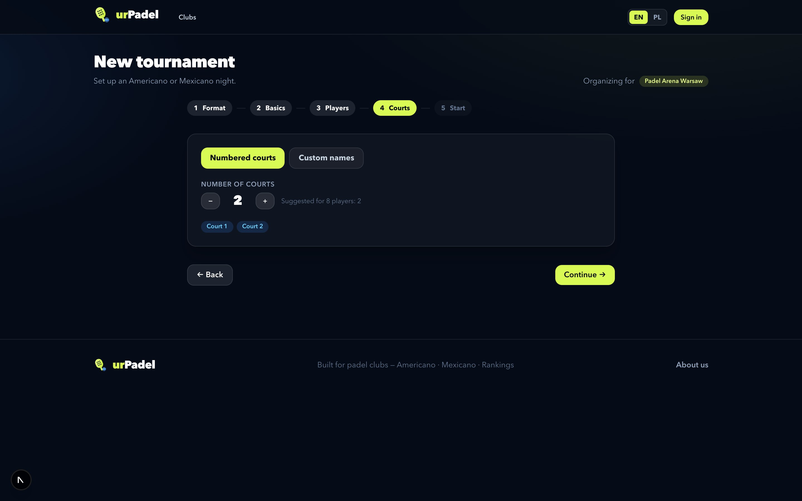
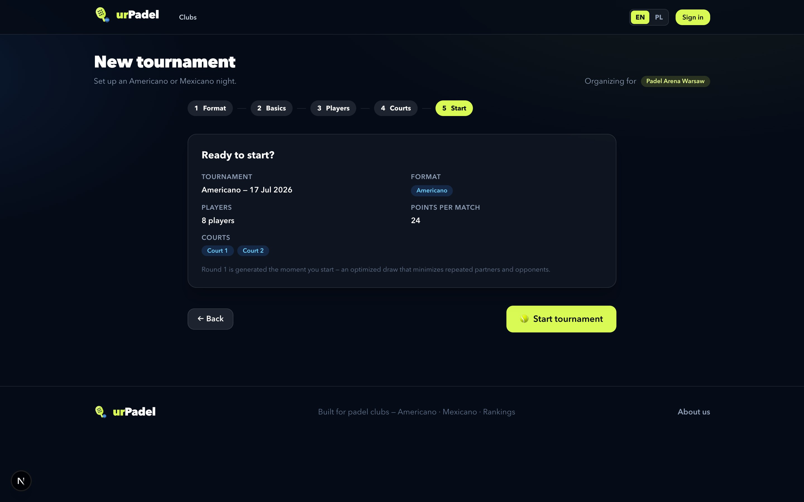
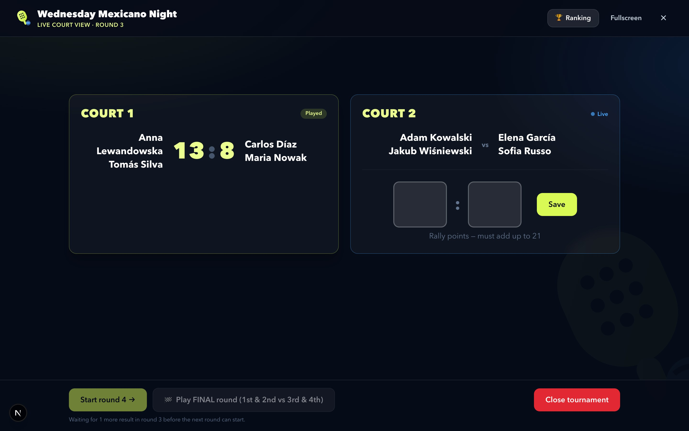

urPadel
Run unforgettable Americano & Mexicano
The complete platform for social padel tournaments — automatic pairings,
live scoring at every court, and a club ranking that keeps players coming back all year.
ur-padel-ten.vercel.app
Created by Michał Ignaczak · m.ignaczak.92@gmail.com
One platform, the whole evening
Everything a padel night needs, in one place
Clubs organize, players score, rankings update themselves. Four tournament
formats, a smart pairing engine, and a public page for every club, tournament and court.

Four formats, one flow
Americano, Mexicano and their team variants — every rally point counts towards the
personal (or team) score, and the highest total wins the night.
Create a tournament in minutes
A five-step wizard anyone can drive

1Pick the format
Americano, Mexicano, Americano Team or Mexicano Team — each explained right on the card.

2Name it, set the points
21, 24, 32 or any custom rally-point total per match — with a live example of what a
finished score looks like.
Create a tournament in minutes
Players in seconds — straight from Playtomic
Tick players from the club roster, quick-add a name, or paste / upload a
Playtomic export, CSV or plain list — header rows and duplicates are handled automatically.
Team formats add a pair builder with one-click shuffle.

3Select & import players
The selected list shows live counts and warns about uneven groups — rests rotate fairly,
so any player count works.
Create a tournament in minutes
Courts, review — play

4Choose the courts
Numbered courts with a smart suggestion, or custom names like “Center Court” and
“Panorama”.

5Review & start
Round 1 is generated the moment you start — an optimized draw that minimizes repeated
partners and opponents (Mexicano draws a lottery).
Run it live
One big screen for the whole round
The fullscreen court view is built for a TV or laptop at the club: every court
with giant score inputs, next-round and final-round controls, and a live ranking popup —
nothing else on screen.

Fullscreen presenter view
Played matches glow volt, live ones pulse blue. The final round is seeded from the
standings: 1st & 2nd vs 3rd & 4th.
Under the hood
A modern, production-grade stack
Next.js 15App Router with React Server Components — every page rendered fresh on the server, APIs and UI in one codebase.
React 19 + TypeScriptStrict TypeScript end to end, from the tournament engine to every screen.
Tailwind CSS v4A custom navy-and-volt design system: one look across public pages, panels and the presenter view.
ClerkSecure authentication with role-based access — super admins, club managers, players — localized in English and Polish.
MongoDB Atlas + MongooseCloud database storing clubs, rosters, tournaments with full round history, rankings and the audit log.
VercelDeployed globally on Vercel’s edge network — the app you’re reading about is live right now.
Built to be trusted
The pairing engine is validated with automated simulations (perfect partner rotation, fair
rests, correct Mexicano seeding) · UI flows verified with Playwright browser automation — the
screenshots in this document were captured by it · dependencies patched against the latest
security advisories (incl. CVE-2025-66478) · every mutation is authorization-checked and audit-logged.
Ready to run your tournament night?
Open the app, browse the demo club, or set up your own club in minutes.
https://ur-padel-ten.vercel.app